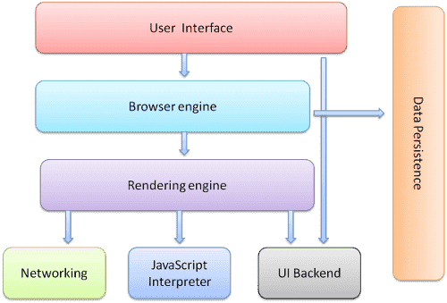
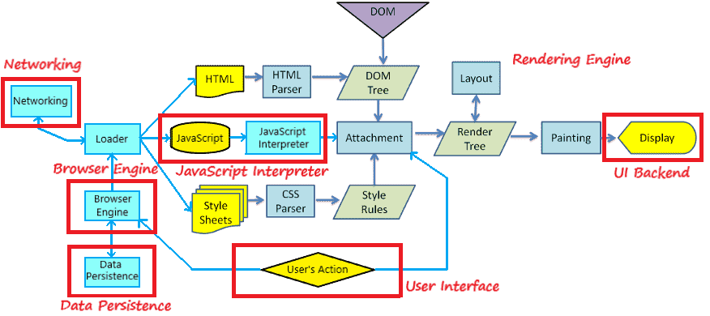
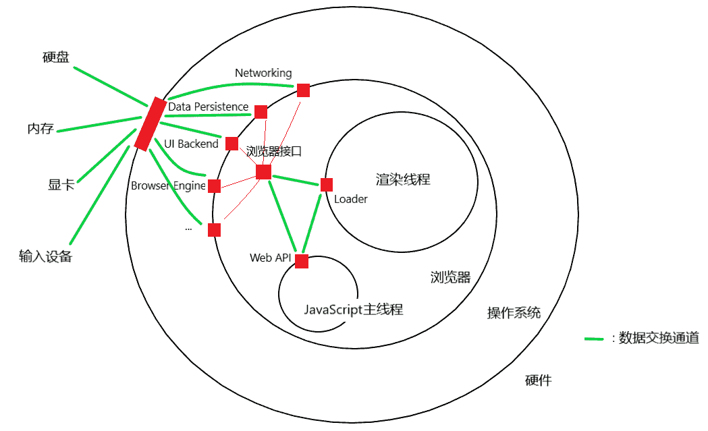
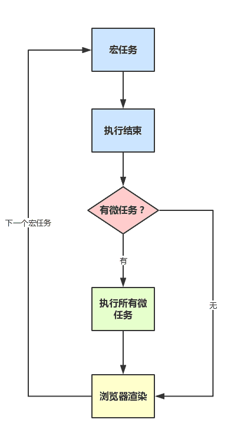

本文包含了浏览器的部分基础内容, 包括浏览器的工作原理, 客户端存储, 以及多线程的相关问题, 不是教程, 不以总结全面为目标, 仅仅是记录下自己觉得有价值的点, 作为参考. 本文包含了很多个人理解, 不一定是正确的, 这是我当前的认知水平.
浏览器的工作原理概述
浏览器的构成.

浏览器主要由以下几个部分构成:
- 用户界面, 包括地址栏, 前进/后退按钮, 书签菜单等, 即浏览器的”前端”
- 浏览器引擎, 在用户界面和渲染引擎之间传送指令(说实话我不清楚这一部分的真正角色, 可能各套壳浏览器会修改这一部分吧)
- 渲染引擎, 解析HTML和CSS, 并计算页面布局, 确定元素位置
- JS解释器, 解释和执行JavaScript代码
- 网络, 用于网络调用, 比如HTTP请求, 公开了与平台无关的通用接口, 而在底层使用操作系统的网络方法(最终是使用网卡)
- 用户界面后端, 用于绘制基本的窗口小部件, 公开了与平台无关的通用接口, 而在底层使用操作系统的用户界面方法(最终是使用显卡)
- 数据存储, 用于浏览器在硬盘保存数据, 也叫数据持久层(最终是使用硬盘)
此部分参考了https://www.html5rocks.com/zh/tutorials/internals/howbrowserswork/.
浏览器的工作流程. 下面的图片是在原图片的基础上, 加上我自己的理解, 绘制的浏览器工作流程图, 使用的是WebKit渲染引擎.

在上图中, 我们可以清晰地看到浏览器的工作流程.
- 浏览器的工作当然是先从
用户界面(User Interface)开始的. 用户的一些操作, 比如点击链接, 输入url跳往指定地址等会触发指令, 通过浏览器引擎(Browser Engine)传往渲染引擎(Render Engine) 浏览器引擎(Browser Engine)还会从数据持久层(Data Persistence)中取出储存的数据, 如Cookie, 缓存等, 一并送往渲染引擎(Render Engine)- 在
渲染引擎(Render Engine)中, 由loader负责接收指令, 并且根据指令调用网络(Networking), 获得相应的文件 - 获得的文件中, HTML部分交由
HTML Parser处理, 形成DOM树(DOM Tree); 样式表部分交由CSS Parser处理, 形成样式规则; JavaScript部分交由JavaScript解释器(JavaScript Interpreter)处理, 把解析结果应用到DOM树和样式规则上. 最终解析完毕的样式规则会附加到DOM树上 - 之后渲染引擎的
布局(Layout)工作, 把包含样式规则的渲染树(Render Tree)转换成包含坐标信息的渲染树. 在首次布局之后, 再次发生的布局被称为重排(Relayout) - 之后渲染引擎的
绘制(Paint)工作, 调用用户界面后端(UI Backend)将每个节点绘制出来. 在首次绘制之后, 再次发生的绘制被称为重绘(Repaint)
此部分参考了https://www.html5rocks.com/zh/tutorials/internals/howbrowserswork/.
- 浏览器的工作当然是先从
大多数情况下, 我们使用Gecko的术语
回流(Reflow)表示重排的过程.- 渲染树中元素的尺寸, 结构或某些属性发生改变时, 会发生回流. 从上面的流程图可以看到, 回流必然引发重绘
- 当一些不影响元素在布局流中的位置的属性改变时, 如
colorvisibility, 仅会发生重绘
由于频繁的回流和重绘会影响性能, 所以在写代码的时候尽量遵循一定的原则避免频繁的回流和重绘:
- 不使用table布局
- 避免设置多层样式
- 避免使用CSS表达式(如
calc()) - 将动画效果应用到
position属性为absolute或fixed的元素上, 否则会引起父元素的频繁回流 - 避免频繁使用JavaScript操作样式, 应多次一并修改
- 避免频繁操作DOM, 可创建
documentFragment, 在其上面进行DOM操作, 最后附加到DOM树上
HTML的解析过程, 是可能会被普通
<script>标签的下载和解析阻塞的. 我们知道HTML文件是自上而下解析成DOM的, 当遇到普通<script>标签时, 会暂停HTML解析, 进行相应的JavaScript(下载和)解析, 因为此时JavaScript可能会操作DOM.CSS不会阻塞HTML解析, 但会阻塞渲染树的生成, 也就是说CSS只有全部解析完毕才会附加到DOM上, 形成渲染树. 然而JavaScript可能会操作样式, 所以浏览器在遇到普通
<script>标签之前的CSS时就会暂停HTML解析过程, 也就是说普通<script>标签之前的CSS会阻塞HTML解析, 之后的CSS就不会阻塞HTML解析了. 这其实是因为每个普通<script>解析完之后, 浏览器会渲染一次页面, 所以必须用到之前的CSS.DOM解析完毕(HTML解析和JavaScript解析的双重结果)时, 触发
DOMContentLoaded事件. 当然, 这时的图片啊普通<script>标签之后的CSS啊等资源不一定下载解析完毕, 当所有资源下载解析完毕时, 触发load事件.异步加载JavaScript的两个方式(可以见我的部分ES6知识-Module部分)中, defer类会在整个同步代码(HTML和普通
<script>标签中的JavaScript)解析完毕之后再解析, 会阻塞DOMContentLoaded事件的触发. 而async类的解析过程会阻塞同步代码解析, 进而阻塞DOMContentLoaded事件的触发, 但是如果在同步代码解析后async类内代码才下载完, 那其就不会阻塞DOMContentLoaded事件的触发了.下图为浏览器接口示意图(根据我自己的理解画的), 所谓Web API, 就是指使用JavaScript去读(获得)或写(控制)其它单位的方法. 这里的其他单位可能是渲染引擎, 也可能是其他JS线程, 也可能是硬件, 当然最终都是控制的硬件.
每一种访问都有其专门的接口, 在JavaScript里面体现为一种特定的对象类型. 比如你
- 想访问渲染引擎里的DOM, 那就用到了
Document类型 - 想访问Web Worker线程, 那就用到了
Worker类型 - 想在内存里新建一定大小的数据, 那就用到了
ArrayBuffer类型 - 想访问硬盘上的二进制文件, 那就用到了
Blob类型 - 想通过网卡异步访问互联网的内容, 那就用到了
XMLHttpRequest类型

DOM接口和BOM接口是使用EcmaScript进行Web开发的基本Web API, 我们把这两部分和EcmaScript合称JavaScript. 但是由于浏览器的日益复杂, 浏览器本身组成部分和支持的硬件越来越多, 所以仅仅使用DOM和BOM无法满足需求. 在这里我倾向于取JavaScript的狭义, 即JavaScript = EcmaScript.
使用JavaScript(EcmaScript)来操作浏览器以及各种硬件, 需要包括DOM接口和BOM接口在内的各种Web API的扶持, 也就是说, Web API实际上赋予了开发者使用JavaScript(EcmaScript)开发各种功能的Web应用的能力, 是构建于JavaScript(EcmaScript)语言之上的.
- 想访问渲染引擎里的DOM, 那就用到了
客户端存储 – *Storage
客户端有2个存储数据的对象.
- localStorage用于长久保存网站数据, 除非手动清除, 不会消失
- sessionStorage用于临时保存网站数据, 关闭窗口或标签页时数据就会被删除
两个对象使用方法都一样, 以localStorage为例:localStorage.data = 1;//设置
console.log(localStorage.data);//读取(结果为字符串)
delete localStorage.data;//删除
localStorage.clear();//全部清除
客户端存储 – IndexedDB
此部分参考了https://www.ruanyifeng.com/blog/2018/07/indexeddb.html
由于cookie大小不能超过4KB, 且每次请求都会发送给服务器; *Storage也有大小限制, 不提供搜索功能, 不能建立自定义的索引. 所以需要一种新的解决方案. IndexedDB是一种NoSQL, 可以在客户端存储大量数据, 还支持二进制储存.
基本概念:
- 数据库(IDBDatabase对象), 数据总容器, 可以建立多个
- 对象仓库(IDBObjectStore对象), 每个数据库中包含若干个对象仓库, 类似于SQL中的表
- 索引(IDBIndex对象), 类似于SQL中的列名
- 事务(IDBTransaction对象), 数据的增删改查都要通过它完成
- 操作请求(IDBRequest对象), 打开或新建数据库时获取到的对象
- 主键, 即默认的索引, 可以指定为某个属性, 也可以是自动生成的递增数据编号
打开, 新建和修改数据库
通过以下方法打开, 新建或修改数据库:let request = indexedDB.open(dbName, dbVerion);
不指定dbVersion, 则使用当前版本. 返回的request是一个
IDBRequest对象.- 如果操作成功则会触发success事件, 此即打开
- 如果指定的版本高于当前版本, 且操作成功则会触发upgradeneeded事件, 此即修改
- 如果指定的数据库名字不存在, 且操作成功则会触发upgradeneeded事件, 此即新建
- 如果操作错误, 则会触发error事件
3个事件的使用如下:request.onsuccess = function (e) {
let db = e.target.result;//这是个`IDBDatabase对象`
db.objectStoreNames;//获得该数据库下所有的
};
request.onupgradeneeded = function (e) {//如果要新建数据库的话, 按下面步骤操作
let db = e.target.result;
let objStore = db.createObjectStore('newOS', { autoIncrement: true });//这个是`IDBObjectStore对象`
objStore.createIndex('name', 'name', {unique: false});//这个是`IDBIndex对象`
};
request.onerror = function (e) {
e.target.error;
};
数据库内对象仓库的增删改查
对对象仓库进行增删改查, 需要先获取该IDBObjectStore对象. 在新建对象仓库时可以通过db.createObjectStore返回值获得该对象, 但是不能这样直接使用, 而是要通过事务对象IDBTransaction对象来获得IDBObjectStore对象. 通过如下方法获得事务对象:let tsc = db.transaction(['objectStorageName'], 'readwrite');
其中db是上面的
IDBDatabase对象, 之后就可以获取到相应的IDBObjectStore对象了:let objStore = tsc.objectStore('objectStorageName');
实际的query操作:
let query = objStore.add({name: 'sam', age: 18});//增
let query = objStore.delete(1);//删, 使用主键值作为参数
let query = objStore.put({name: 'amy', age: 19}, 1);//改, 第二个参数是主键值
let query = objStore.get(1);//查, 使用主键值作为参数
let query = objStore.index('name').get('sam');//查, 使用索引作为参数
let query = objStore.openCursor();//遍历, 监听query的success事件
//以上query都有success和error事件, 都是`IDBRequest对象`, 在监听函数内部通过e.target.result或this.result或query.result访问到结果
//使用监听函树实例(遍历):
query.onsuccess = function (e) {
let cursor = e.target.reuslt;
if(cursor) {
console.log(cursor.value, cursor.key);
cursor.continue();
}
}
多线程
浏览器的进程和线程
进程(process)是操作系统分配资源的最小单位,线程(thread)是程序执行的最小单位; 进程由线程组成, 进程间相互独立, 同一进程的线程之间共享资源; 线程切换比进程快.Chrome浏览器使用的是多进程隔离不同的标签页, 在每一个进程中, 有着渲染引擎线程, JavaScript主线程, 定时器线程, 事件线程以及网络线程等. 除了各标签页进程外, Chrome还有主进程, 扩展程序进程等.
Web Worker和Service WorkerJavaScript是设计用来操作DOM的语言, 为了避免复杂性, JavaScript是一种单线程语言. 由于JavaScript主线程和渲染引擎线程互斥, 所以如果JavaScript主线程上有一些耗时的代码, 那么必然会阻塞其他代码的执行, 也会阻塞页面的渲染. 所以, 如果我们需要运行一些耗时的代码时, 完全可以开辟一个新的线程, 这就是
Web Worker.Web Worker实际上是存在于标签页进程内部的线程.然而
Web Worker是跟随标签页进程的, 当标签页关闭了, 其工作也就结束了. 如果想持久化, 那就需要Service Worker.Service Worker本身也是一个新的线程, 但是它是独立于标签页线程的, 标签页的关闭不会导致其结束. 而且,Service Worker还被赋予中间人代理的权利, 即抓取网络请求并作出修改, 再送给渲染引擎的权利. 借着这两点, 它可以做到对网络请求文件的缓存, 使页面可以离线访问. 它还有消息推送的能力, 使得Web网页变得更像一个本地应用.事件循环(Event Loop)
关于Node.js的事件循环, 见我的关于Node.js的文章Node.js基础
在Web中, 有大量的多线程操作, 比如I/O(ajax, 读文件等), UI交互, 定时器, 上面提到的Worker等, 为了不阻塞主线程, 它们最好是异步运行, 基于事件来通知主线程. 同时, 我们还可以通过Promise来对它们包装(Promise代表执行顺序, 是一种异步包装方式, 本身不会开辟新线程执行代码).
浏览器的异步执行方式是这样的:
JavaScript主线程中JavaScript解释器自上而下解释主任务代码, 根据作用域链对执行栈进行压栈弹栈, 遇到多线程代码会开辟子线程处理. 子线程的代码只要执行完毕, 就会触发事件通知主线程, 并往任务队列里面添加任务. 主线程接到事件通知, 待空闲时就会检测任务队列, 只要其中有任务, 就出队一个任务, 将其压入执行栈执行, 执行完毕后再次在任务队列里取任务, 直到任务队列为空. 这就是
事件循环(Event Loop)机制.如下图所示, 任务分为两种,
micro task(微任务)和macro task(宏任务), 前者主要包含包含Promise, 后者包含主任务,setTimeout,setInterval, I/O, UI交互, postMessage等. JavaScript主线程会先从宏任务队列中出队一个任务来执行(第一次取出的就是主任务), 任务执行完毕后再读取微任务队列, 并按顺序执行所有的微任务, 只有微任务队列没有事件时, 才会再次读取宏任务队列. 这样的话, 如果某些前面的任务执行特别耗时间的话,setTimeout和setInterval这些函数的定时可能是不准确的.
关于
requestAnimationFrame, 它是异步执行(基于事件)的, 但它既不是微任务, 也不是宏任务. 可以认为还存在一个requestAnimationFrame任务队列, 在每次事件循环的渲染步骤前(参考上图), 会检测是否有requestAnimationFrame任务, 并全部执行.在现代Chrome浏览器里面,
setTimeout和setInterval的时间最小设置值是1(ms), 也就是说第二个参数设为1和0是一样的.由于一方面不好确认浏览器的最佳刷新间隔, 另一方面
setTimeout和setInterval受到事件循环中延时的影响更大, 所以自定义动画推荐使用requestAnimationFrame.下面是关于浏览器事件循环的例子:
setTimeout(() => {console.log('setTimeout0');}, 0);
let promise = new Promise(function(resolve, reject) {
console.log('Promise');
setTimeout(() => {console.log('setTimeout1')}, 0);
resolve();
});
(async function () {
await promise;
console.log('resolved');
}());
console.log('Hi!');
/*
依次显示
Promise
Hi!
resolved
setTimeout0
setTimeout1
*/
Web Worker
此部分参考了http://www.ruanyifeng.com/blog/2018/07/web-worker.html
基本用法.
主线程(JavaScript解释器线程):
let worker = new Worker('work.js');
worker.postMessage({content: 'Hello'});
worker.onmessage = function (e) {
console.log(e);
console.log('main thread recieved message!');
}
worker.onerror = console.error;Worker线程全局环境绑定了监听函数和消息发送函数, work.js的内容如下:
onmessage = function (e) {
console.log(e);
console.log('web worker recieved message!');
postMessage({content: 'Hello too'});
}关闭Worker线程:
worker.terminate();//主线程内
close();//Worker线程内数据通信.
主线程和Worker线程之间的通信是拷贝的关系, 即先把通信内容串行化(转换成字符串), 接收方再将其还原. 主线程和Worker线程之间也可以交换二进制数据, 但是如果二进制数据太大, 这样的拷贝既浪费时间, 又浪费存储资源. 在此, 可以通过直接将二进制数据转移给Worker线程.
let ab1 = new ArrayBuffer(16);
let ab2 = new ArrayBuffer(16);
worker.postMessage(
{ab1, ab2},
[ab1, ab2]
);其中第一个参数就是指传递的变量, 第二个参数是一个数组, 包含了需要转移的二进制数据变量名.
同文件的Web Worker.
使用Web Worker可以不用单独的文件, 借助Blob类型的URL构造能力, 可以在单个文件内创建Web Worker.
let work = function () {
//web worker codes
}
let blob = new Blob(`(${work.toString()})()`);
let url = URL.createObjectURL(blob);
let worker = new Worker(url);
//或者
let work = `
//web worker codes
`;
let blob = new Blob(work);
let url = URL.createObjectURL(blob);
let worker = new Worker(url);
Service Worker
建议参考https://lavas-project.github.io/pwa-book/chapter04.html, 文章把Service Worker作为PWA技术的一部分, 讲解得非常详实. 由于Service Worker并不是一种基础知识, 在此我就不总结了.